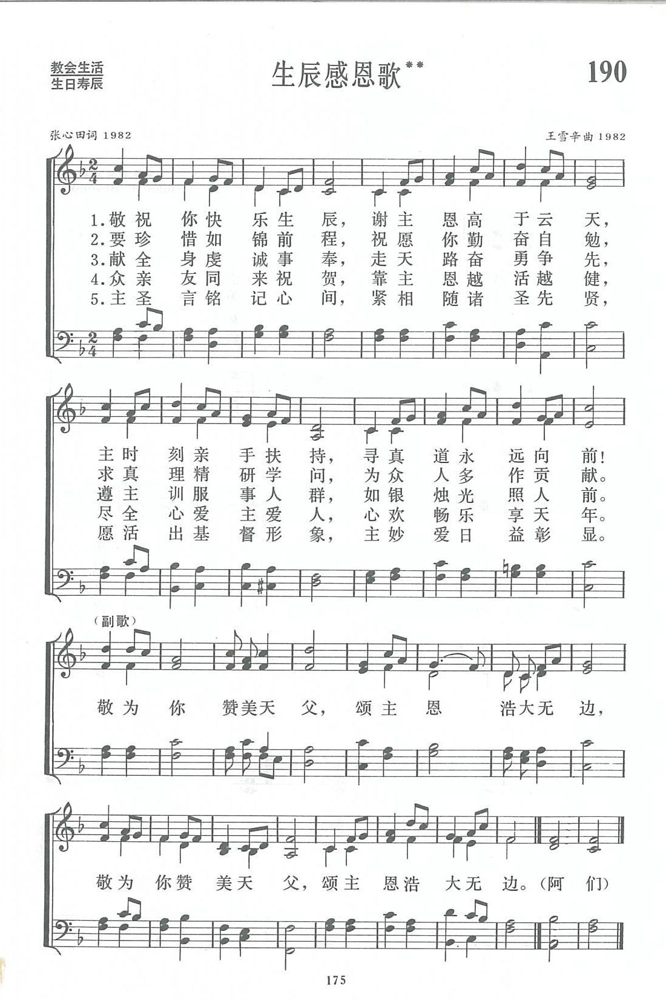

|
|
讚美詩(新編) |
|
|
|
|
https://www.zanmeishige.com/tab/13863.html?songbook=1&index=190
 |
|
|
|
|

https://youtu.be/F_OpnSTTOLA https://www.youtube.com/watch?v=8Ga2BwlPQa0
第190首 生辰感恩歌** _张心田 GRATEFUL TO GOD FOR YOUR BIRTHDAY
经文：“求你指教我们怎样数算自己的日子，好叫我们得着智慧的心”(诗90：12)。
这首《生辰感恩歌》顾名思义就是为过生日而写的感恩赞美诗。
作者张心田(简历参阅第1l5首)在写这诗前，参考了《普天颂赞》，发现其中有一首《称觞上寿歌》，是杨荫浏作的七律诗，由杨嘉仁谱曲，专为祝寿感恩之用。张心田想；祝寿是信徒生活中的大事，毕竟机会较少。一般人只逢“十”祝寿，如六十花甲，七十古稀，再上至八十、九十，以至百岁高寿，一生能有几次这样的祝贺?生日却是年年都有，何不写一首祝寿和祝贺生日都可应用的圣诗，供大家采用。《生辰感恩歌》便这样产生了。
全诗共五节。
第一节是总的感恩。感谢主无边的大爱和时刻的扶持；
第二节是为青年写的，勉励他们珍惜自己的美好前程。勤奋学习，好为众人多作贡献；
第三节是为中年人写的，他们已在社会上立业，要求他们遵照主的教训，发光照亮人间，荣耀上主；
第四节是为老年人写的，祝愿他们健康长寿，爱主爱人，心情舒畅，乐享天年；
最后一节是结束，不论青年、中年、老年人，都要铭记主的教训，活出基督的形像，从各人身上显出上主的妙爱。
副歌两句重复，为过生日者献上赞美，颂扬主的深恩厚爱。
因此这首诗不论老年、中年、青年人祝寿或生日感恩时都可应用。
如果主人公是青年人，可以唱一、二、五节；
如果主人公是中年人，可以唱一、三、五节；
如果主人公是老年人，可以唱一、四、五节。
如果参加的人老中青都有，为了共同感恩，五节全唱也未尝不可。
曲作者王雪辛同道生于1923年，父亲是温州的牧师。他从小在家庭中受教会音乐的薰陶，由此走上了学音乐的道路。1942至1946年，他就读于国立福建音乐专科学校理论作曲科，后在温州、上海几所中学任教，并曾在上海灵粮堂的唱诗班当指挥。 1949年以后。他曾任西南军区文工团音乐指导、赴朝慰问文工团合唱指挥等职。他自述“生活道路曲折坎坷，但主的大能时时扶持、带领我。无论在困难的时候、欢乐的时候，我总是把圣诗、特别是那些充满属灵力量的短歌作为我生活中最亲近的伴侣，时刻在心中默唱，得到安慰和力量”。
八十年代初，教会重新恢复，他以无比快乐的心情参加成都教会礼拜，并任唱诗班指挥。1984年离休后，他更多为主作工，在四川神学院教圣乐。他是中国音乐家协会会员，四川音乐家协会顾问，著有《音乐新潮》、《音乐欣赏教程》等书。
他认为“圣诗是纯洁的，容不得一点污秽的杂念。写圣诗不是技巧问题，首先是灵性问题。没有属灵的经历是无法写出属灵的歌来的”。他也很赞成要创作具有中国风格的赞美诗，曾说：“只有这样做，才能使赞美诗成为每一位中国基督徒灵性生活中不可缺少的珍宝，这也是中国教会兴旺的标志。”